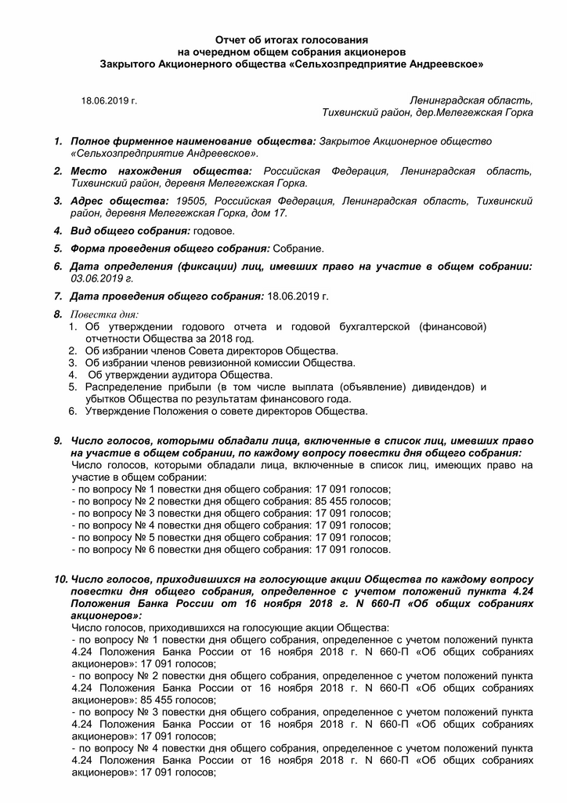
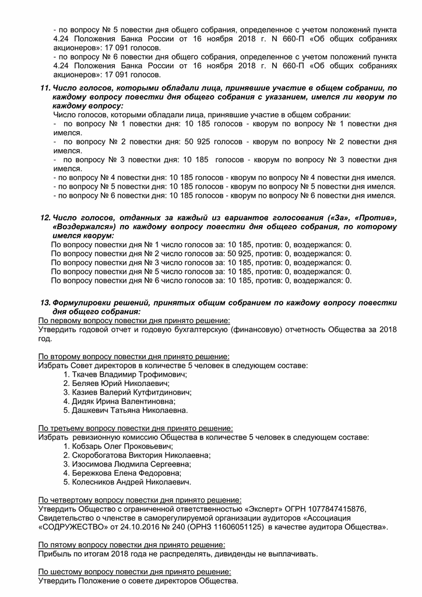
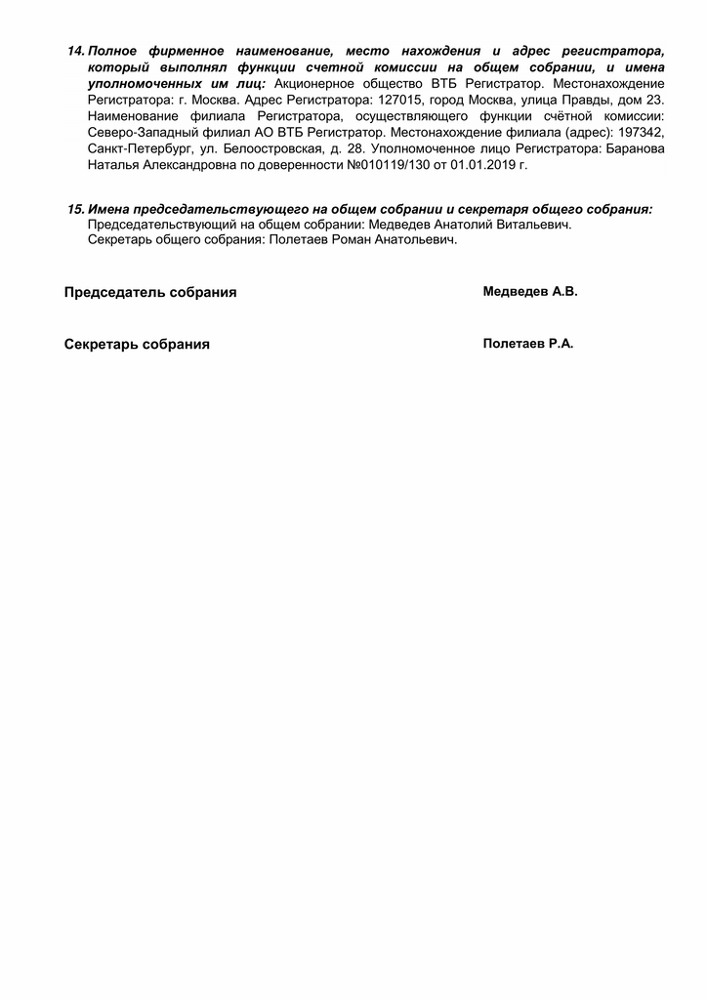

Новости
СООБЩЕНИЕ
О ПРОВЕДЕНИИ ГОДОВОГО ОБЩЕГО СОБРАНИЯ АКЦИОНЕРОВ
Акционерного общества «Сельскохозяйственное предприятие Андреевское» ОГРН 1024701848852
Место нахождения (почтовый адрес):
187504 Ленинградская область, Тихвинский район, дер. Мелегежская горка, дом 17.
УВАЖАЕМЫЕ АКЦИОНЕРЫ!
Совет директоров АО «Сельскохозяйственное предприятие Андреевское» уведомляет своих акционеров о проведении годового общего собрания акционеров АО «Сельскохозяйственное предприятие Андреевское» проводимого в форме заочного голосования 26 мая 2023 года.
Дата составления списка акционеров, имеющих право на участие во внеочередном общем собрании акционеров: 01 мая 2023 г.
Почтовый адрес, по которому акционерами направляются заполненные бюллетени: 187504 Ленинградская область, Тихвинский район, деревня Мелегежская Горка, дом № 17.
Дата окончания приема бюллетеней для голосования – 26 мая 2023 года.
Повестка дня годового общего собрания акционеров:
1. Об утверждении Устава Общества в новой редакции – Устава Акционерного общества «Сельскохозяйственное предприятие Андреевское» (приведение Устава в соответствие с требованиями, установленными для публичного общества).
2. Об утверждении Устава Общества в новой редакции – Устава Публичного акционерного общества «Сельскохозяйственное предприятие Андреевское» (приобретение непубличным обществом публичного статуса).
3. Об утверждении Положения о Ревизионной комиссии Общества.
4. О принятии решения об обращении к Акционерному обществу «Санкт-Петербургская Валютная Биржа» с заявлением о листинге акций Общества.
5. Об ответственном лице за корпоративное управление в Обществе.
6. Об утверждении годового отчета Общества за 2022 год.
7. Об утверждении годовой бухгалтерской (финансовой) отчетности Общества за 2022 год.
8. Об избрании членов Совета директоров Общества.
9. Об избрании членов ревизионной комиссии Общества.
10. О назначение аудиторской организации Общества.
11. Распределение прибыли (в том числе выплата (объявление) дивидендов) и убытков Общества по результатам финансового года.
Материалы, предоставляемые акционерам при подготовке к проведению годового общего собрания, не рассылаются. С информацией, подлежащей представлению акционерам при подготовке и проведении годового общего собрания акционеров, можно ознакомиться по предварительной записи с 09-00 до 11-00 местного времени по адресу: Ленинградская область, Тихвинский муниципальный район, Мелегежское сельское поселение, деревня Мелегежская горка, дом 17, административное здание ЗАО «Сельскохозяйственное предприятие Андреевское», 2 этаж, кабинет директора с 05.05.2023 года.
Председатель Совета директоров
Дашкевич Татьяна Николаевна
УВЕДОМЛЕНИЕ
ОБ ИТОГАХ ОСУЩЕСТВЛЕНИЯ АКЦИОНЕРАМИ, ИМЕЮЩИМИ ПРЕИМУЩЕСТВЕННОЕ ПРАВО ПРИОБРЕТЕНИЯ РАЗМЕЩАЕМЫХ ЦЕННЫХ БУМАГ, ПРЕИМУЩЕСТВЕННОГО ПРАВА ПРИОБРЕТЕНИЯ РАЗМЕЩАЕМЫХ ЦЕННЫХ БУМАГ
Акционерное общество «Сельскохозяйственное предприятие Андреевское» (далее по тексту также Общество) уведомляет акционеров об окончании возможности осуществления преимущественного права, предусмотренного ст.ст. 40, 41 ФЗ "Об акционерных обществах", приобретения обыкновенных акций дополнительного выпуска (регистрационный номер дополнительного выпуска ценных бумаг – 1-02-16041-J-001D, дата государственной регистрации дополнительного выпуска ценных бумаг – 12 октября 2022 года).
Срок действия преимущественного права приобретения размещаемых ценных бумаг составлял 45 дней с момента уведомления акционеров о возможности осуществления преимущественного права приобретения размещаемых ценных бумаг.
Дата размещения Уведомления о возможности осуществления преимущественного права приобретения размещаемых ценных бумаг (далее также - Уведомление) на сайте Общества в информационно-телекоммуникационной сети «Интернет» по адресу http://www.zaoandreevskoe.ru: 19 октября 2022 года.
Дата окончания осуществления акционерами, имеющими преимущественное право приобретения размещаемых ценных бумаг, преимущественного права приобретения размещаемых ценных бумаг – 05 декабря 2022 года.
Итоги осуществления акционерами, имеющими преимущественное право приобретения размещаемых ценных бумаг, преимущественного права приобретения размещаемых ценных бумаг:
Количество заявлений, поступивших от акционеров, имеющих преимущественное право приобретения размещаемых ценных бумаг: 0 шт.
Количество размещаемых ценных бумаг, указанных в Заявлениях на приобретение размещаемых ценных бумаг в порядке осуществления преимущественного права: 0 шт.
Количество размещаемых ценных бумаг, оплаченных акционерами, имеющими преимущественное право приобретения размещаемых ценных бумаг и подавшими письменные Заявления на приобретение размещаемых ценных бумаг в порядке осуществления преимущественного права: 0 шт.
Количество ценных бумаг, подлежащих размещению акционерам, имеющим преимущественное право приобретения размещаемых ценных бумаг, в соответствии с заявлениями на приобретение размещаемых ценных бумаг в порядке реализации преимущественного права: 0 шт.
Количество ценных бумаг, оставшихся к размещению после осуществления акционерами, имеющими преимущественное право приобретения размещаемых ценных бумаг, преимущественного права приобретения размещаемых ценных бумаг: 500 000 штук.
Дата подведения итогов осуществления акционерами, имеющими преимущественное право приобретения размещаемых ценных бумаг, преимущественного права приобретения размещаемых ценных бумаг: 07 декабря 2022 г.
С уважением, АО «Сельхозпредприятие Андреевское».
07 декабря 2022 г.
Уведомление о возможности осуществления преимущественного права
приобретения размещаемых ценных бумаг
Акционерного общества «Сельскохозяйственное предприятие Андреевское»
Уважаемый акционер, имеющий преимущественное право приобретения размещаемых ценных бумаг (акционер, голосовавший против или не принимавший участия в голосовании по вопросу «Об увеличении уставного капитала Общества путем размещения дополнительных акций») на годовом общем собрании акционеров 27 июня 2022 года)!
Доводим до Вашего сведения, что 12 октября 2022 года Центральным банком Российской Федерации, в лице Северо-Западного главного управления Центрального банка Российской Федерации, зарегистрирован дополнительный выпуск обыкновенных акций Акционерного общества «Сельскохозяйственное предприятие Андреевское» (далее по тексту - Общество) в количестве 500 000 штук номинальной стоимостью 100 рублей каждая, регистрационный номер дополнительного выпуска ценных бумаг - 1-02-16041-J-001D.
Цена размещения ценных бумаг, в том числе лицам, имеющим преимущественное право приобретения ценных бумаг: 100 рублей каждая за одну акцию.
Вы имеете преимущественное право приобретения ценных бумаг данного выпуска в количестве, пропорциональном количеству принадлежащих Вам обыкновенных акций по состоянию на 02 июня 2022 года.
А=В*500 000/17 091, где:
А – количество ценных бумаг дополнительного выпуска, которое такие лица вправе приобрести;
В – количество ценных бумаг Общества, принадлежащих лицу, имеющему преимущественное право приобретения ценных бумаг дополнительного выпуска, на дату 02 июня 2022 года;
500 000 – количество размещаемых ценных бумаг дополнительного выпуска;
17 091 – общее количество ранее размещенных ценных бумаг.
Если в результате определения количества размещаемых дополнительных акций, в пределах которого Вами может быть осуществлено такое преимущественное право, образуется дробное число, Вы вправе приобрести часть размещаемой дополнительной акции (дробную акцию), соответствующую дробной части образовавшегося числа.
Срок действия преимущественного права приобретения размещаемых ценных бумаг составляет 45 дней с момента уведомления акционеров о возможности осуществления преимущественного права приобретения размещаемых ценных бумаг.
Моментом уведомления акционеров о возможности осуществления преимущественного права приобретения размещаемых ценных бумаг считать дату размещения на сайте Общества в информационно-телекоммуникационной сети «Интернет» по адресу: http://www.zaoandreevskoe.ru настоящего Уведомления.
Настоящим напоминаем Вам о том, что в соответствии со статьей 191 ГК РФ течение срока, определенного периодом времени, начинается на следующий день после календарной даты или наступления события, которыми определено его начало.
Таким образом, срок действия преимущественного права начинает действовать в день, следующий за датой уведомления акционеров о возможности осуществления преимущественного права приобретения размещаемых ценных бумаг.
Лицо, имеющее преимущественное право приобретения размещаемых ценных бумаг, в соответствии со ст. 40, 41 ФЗ "Об акционерных обществах", вправе полностью или частично осуществить свое преимущественное право путем подачи Заявления о приобретении размещаемых ценных бумаг (далее по тексту также - Заявление) и исполнения обязанности по их оплате.
Заявление о приобретении размещаемых ценных бумаг лица, имеющего преимущественное право, должно содержать сведения, позволяющие идентифицировать подавшее его лицо и количество приобретаемых им ценных бумаг.
Заявление подается путем направления или вручения под роспись Регистратору Общества – Акционерному обществу ВТБ Регистратор документа в письменной форме, подписанного подающим заявление лицом.
Заявление может быть направлено или вручено под роспись Регистратору Общества - Акционерному обществу ВТБ Регистратор по адресу его места нахождения (адресу для направления почтовой корреспонденции), а также по адресу любого отделения или филиала Акционерного общества ВТБ Регистратор, указанного на официальном сайте Акционерного общества ВТБ Регистратор: https://www.vtbreg.ru/.
Заявление подается по рабочим дням в часы приема зарегистрированных лиц, указанные на официальном сайте Акционерного общества ВТБ Регистратор: https://www.vtbreg.ru/ в течение всего срока действия преимущественного права, который составляет 45 дней с момента уведомления акционеров о возможности осуществления преимущественного права приобретения размещаемых ценных бумаг в порядке, предусмотренном пунктом 4.4 Документа, содержащего условия размещения ценных бумаг.
Если это предусмотрено правилами, в соответствии с которыми Регистратор общества Акционерное общество ВТБ Регистратор осуществляет деятельность по ведению реестра, Заявление может подаваться также путем направления Регистратору общества электронного документа, подписанного квалифицированной электронной подписью. Указанными правилами также может быть предусмотрена возможность подписания такого электронного документа простой или неквалифицированной электронной подписью. В этом случае электронный документ, подписанный простой или неквалифицированной электронной подписью, признается равнозначным документу на бумажном носителе, подписанному собственноручной подписью.
Заявление о приобретении размещаемых ценных бумаг, направленное или врученное Регистратору Общества - Акционерному обществу ВТБ Регистратор, считается поданным в Общество в день его получения Регистратором Общества - Акционерным обществом ВТБ Регистратор.
Лицо, имеющее преимущественное право приобретения размещаемых ценных бумаг, не зарегистрированное в реестре акционеров общества, осуществляет такое преимущественное право путем дачи соответствующего указания (инструкции) лицу, которое осуществляет учет его прав на акции Общества. Такое указание (инструкция) дается в соответствии с требованиями законодательства Российской Федерации о ценных бумагах и должно содержать количество приобретаемых ценных бумаг. При этом заявление о приобретении размещаемых ценных бумаг считается поданным в Общество в день получения Регистратором Общества Акционерным обществом ВТБ Регистратор от номинального держателя акций, зарегистрированного в реестре акционеров общества, сообщения, содержащего волеизъявление такого лица.
Заявление о приобретении размещаемых ценных бумаг рассматривается Обществом на следующий рабочий день после получения Обществом такого Заявления, но не позднее даты истечения срока действия преимущественного права.
Если Заявление о приобретении размещаемых ценных бумаг подлежит удовлетворению, то лицо, имеющее преимущественное право приобретения размещаемых ценных бумаг, направившее такое заявление, должно быть об этом уведомлено Обществом не позднее 2 (двух) рабочих дней с момента получения Обществом Заявления о приобретении размещаемых ценных бумаг, но не позднее даты истечения срока действия преимущественного права, тем же способом, предусмотренным пунктом 4.4 Документа, содержащего условия размещения ценных бумаг, что и для уведомления лиц, имеющих преимущественное право приобретения размещаемых ценных бумаг, о возможности его осуществления.
Заявление о приобретении размещаемых ценных бумаг не подлежит удовлетворению, в случае если:
-
Заявление о приобретении размещаемых ценных бумаг не соответствует требованиям, предусмотренным пунктом 4.4 Документа, содержащего условия размещения ценных бумаг;
-
Заявление о приобретении размещаемых ценных бумаг получено Обществом по истечении срока действия преимущественного права.
В случае, если Заявление о приобретении размещаемых ценных бумаг не подлежит удовлетворению, то лицо, имеющее преимущественное право приобретения размещаемых ценных бумаг, направившее такое заявление, должно быть уведомлено Обществом об отказе в удовлетворении Заявления о приобретении размещаемых ценных бумаг в порядке осуществления преимущественного права с указанием причин, по которым осуществление преимущественного права приобретения размещаемых ценных бумаг невозможно и указанием на то, что лицо, имеющее преимущественное право приобретения размещаемых ценных бумаг, имеет право повторно подать Заявление о приобретении размещаемых ценных бумаг в течение срока действия преимущественного права приобретения размещаемых ценных бумаг, устранив причины, по которым осуществление преимущественного права приобретения размещаемых ценных бумаг невозможно, не позднее 2 (двух) рабочих дней с момента получения Обществом Заявления о приобретении размещаемых ценных бумаг, но не позднее даты истечения срока действия преимущественного права, тем же способом, предусмотренным пунктом 4.4 Документа, содержащего условия размещения ценных бумаг, что и для уведомления лиц, имеющих преимущественное право приобретения размещаемых ценных бумаг, о возможности его осуществления.
В случае отказа в удовлетворении Заявления о приобретении размещаемых ценных бумаг в порядке осуществления преимущественного права, лицо, желающее осуществить преимущественное право приобретения размещаемых ценных бумаг вправе в течение срока действия преимущественного права направить указанное заявление повторно, устранив причины, по которым осуществление преимущественного права приобретения размещаемых ценных бумаг невозможно.
Договор, на основании которого осуществляется размещение ценных бумаг лицу, реализующему преимущественное право их приобретения, заключается посредством подачи лицом, имеющим преимущественное право приобретения размещаемых ценных бумаг в порядке и сроки, предусмотренные пунктом 4.4 Документа, содержащего условия размещения ценных бумаг, Заявления о приобретении размещаемых ценных бумаг и удовлетворения такого Заявления о приобретении размещаемых ценных бумаг Обществом.
Договор, на основании которого осуществляется размещение ценных бумаг лицу, реализующему преимущественное право их приобретения, в случае удовлетворения Обществом поданного лицом, имеющим преимущественное право приобретения размещаемых ценных бумаг, Заявления о приобретении размещаемых ценных бумаг, считается заключенным с даты получения Обществом от лица, имеющего преимущественное право приобретения размещаемых ценных бумаг, такого Заявления о приобретении размещаемых ценных бумаг.
В случае, если Заявления о приобретении размещаемых ценных бумаг поступят до даты начала размещения ценных бумаг и оплата таких ценных бумаг будет осуществлена до даты начала размещения ценных бумаг, договоры, на основании которого осуществляется размещение ценных бумаг лицам, реализующим преимущественное право их приобретения, будут считаться заключенными в дату начала размещения ценных бумаг.
Условия, порядок и срок оплаты ценных бумаг:
Способ оплаты размещаемых ценных бумаг:
Предусмотрена оплата размещаемых ценных бумаг денежными средствами, включая возможность оплаты размещаемых ценных бумаг путем зачета денежных требований.
Форма оплаты размещаемых ценных бумаг денежными средствами – безналичная.
Наличная форма расчетов не предусмотрена.
Банковские реквизиты счета Эмитента, на которые должны перечисляться денежные средства, поступающие в оплату ценных бумаг:
Сведения о кредитной организации:
Полное фирменное наименование кредитной организации: Акционерное общество «Российский Сельскохозяйственный банк»
Место нахождения кредитной организации: Российская Федерация, г. Москва.
ИНН кредитной организации: 7725114488.
р/сч: 40702810835100000027, кор/сч: 30101810900000000910, БИК: 044030910.
Реквизиты получателя денежных средств:
Полное фирменное наименование: Акционерное общество «Сельскохозяйственное предприятие Андреевское»
Сокращенное фирменное наименование: АО «Сельхозпредприятие Андреевское»
ИНН 4715003007, КПП 471501001.
Датой исполнения обязательства по оплате размещаемых ценных бумаг, произведенной путем перечисления денежных средств на расчетный счет, считается дата зачисления денежных средств на расчетный счет эмитента, указанный в пункте 4.5 Документа, содержащего условия размещения ценных бумаг.
Перечисление денежных средств в оплату ценных бумаг на счета брокеров, оказывающих эмитенту услуги по размещению и (или) по организации размещения ценных бумаг, не предусмотрено.
Оплата ценных бумаг неденежными средствами не предусмотрена.
Предусмотрена оплата дополнительных акций, размещаемых посредством закрытой подписки, путем зачета денежных требований к акционерному обществу – эмитенту.
Заявление об оплате размещаемых ценных бумаг путем зачета денежных требований, которое должно содержать сумму предъявленных к зачету денежных средств в рублях (в случае наличия у приобретателя встречного денежного требования к эмитенту, срок исполнения которого наступил либо срок которого не указан или определен моментом востребования), может быть направлено в Общество:
-
в случае если оплата ценных бумаг путем зачета денежных требований к Обществу производится лицом, осуществляющим преимущественное право приобретения размещаемых ценных бумаг при реализации им преимущественного права приобретения размещаемых ценных бумаг дополнительного выпуска - в течение всего срока действия преимущественного права, предусмотренного пунктом 4.4 Документа, содержащего условия размещения ценных бумаг;
Указанное Заявление об оплате размещаемых ценных бумаг путем зачета денежных требований принимается по адресу: 187504, Ленинградская область, Тихвинский район, деревня Мелегежская Горка, дом 17, кабинет директора, по рабочим дням с 10 часов 00 минут до 16 часов 00 минут.
Оплата размещаемых ценных бумаг путем зачета денежных требований производится на основании Соглашения о зачете денежных требований, заключаемого путем составления единого документа, составленного в простой письменной форме, подписанного обеими сторонами.
Указанное Соглашение о зачете денежных требований заключается в следующие сроки:
-
в случае если оплата ценных бумаг путем зачета денежных требований к Обществу производится лицом, осуществляющим преимущественное право приобретения размещаемых ценных бумаг при реализации им преимущественного права приобретения размещаемых ценных бумаг дополнительного выпуска - в день поступления в Общество от лица, осуществляющего преимущественное право приобретения размещаемых ценных бумаг, Заявления об оплате размещаемых ценных бумаг путем зачета денежных требований, но не позднее окончания срока действия преимущественного права, предусмотренного пунктом 4.4 Документа, содержащего условия размещения ценных бумаг.
Датой оплаты размещаемых ценных бумаг, произведенной путем зачета денежных требований к Обществу, является дата заключения указанного выше Соглашения о зачете денежных требований.
Срок оплаты размещаемых ценных бумаг:
При осуществлении преимущественного права приобретения размещаемых ценных бумаг приобретаемые акции должны быть полностью оплачены в течение срока действия преимущественного права, предусмотренного пунктом 4.4. Документа, содержащего условия размещения ценных бумаг.
С уважением,
Директор
Н.Н. Тихоненко
19 октября 2022 года
Отчет об итогах голосования
на очередном общем собрания акционеров
Закрытого Акционерного общества «Сельхозпредприятие
Андреевское»
Отчет об итогах голосования
на очередном общем собрания акционеров
Закрытого Акционерного общества «Сельхозпредприятие Андреевское»
27.06.2022 г. Ленинградская область, Тихвинский район, дер.Мелегежская Горка
Полное фирменное наименование общества: ЗакрытоеАкционерное общество «Сельхозпредприятие Андреевское».
Место нахождения общества:Российская Федерация, Ленинградская область, Тихвинский район, деревня Мелегежская Горка.
Адрес общества:187504, РоссийскаяФедерация, Ленинградская область, Тихвинский район, деревня Мелегежская Горка, дом 17.
Вид общего собрания:годовое.
Форма проведения общего собрания:Собрание.
Дата определения (фиксации) лиц, имевших право на участие в общем собрании: 02.06.2022 г.
Дата проведения общего собрания:27.06.2022 г.
Повестка дня:
1. Об определении количества, номинальной стоимости, категории (типа) объявленных акций и прав, предоставляемых этими акциями.
2. Об утверждении Устава Общества в новой редакции.
3. Об увеличении уставного капитала Общества путем размещения дополнительных акций.
4. Об утверждении годового отчета и годовой бухгалтерской (финансовой) отчетности Общества за 2021 год.
5. Об избрании членов Совета директоров Общества.
6. Об избрании членов ревизионной комиссии Общества.
7. Об утверждении аудитора Общества.
8. Распределение прибыли (в том числе выплата (объявление) дивидендов) и убытков Общества по результатам финансового года.
Число голосов, которыми обладали лица, включенные в список лиц, имевших право на участие в общем собрании, по каждому вопросу повестки дня общего собрания:
Число голосов, которыми обладали лица, включенные в список лиц, имеющих право на участие в общем собрании:
- по вопросу № 1 повестки дня общего собрания: 17 091 голосов;
- по вопросу № 2 повестки дня общего собрания: 17 091 голосов;
- по вопросу № 3 повестки дня общего собрания: 17 091 голосов;
- по вопросу № 4 повестки дня общего собрания: 17 091 голосов;
- по вопросу № 5 повестки дня общего собрания: 85 455 голосов;
- по вопросу № 6 повестки дня общего собрания: 17 091 голосов.
- по вопросу № 7 повестки дня общего собрания: 17 091 голосов.
- по вопросу № 8 повестки дня общего собрания: 17 091 голосов.
- Число голосов, приходившихся на голосующие акции Общества по каждому вопросу повестки дня общего собрания, определенное с учетом положений пункта 4.24 Положения Банка России от 16 ноября 2018 г. N 660-П «Об общих собраниях акционеров»:
Число голосов, приходившихся на голосующие акции Общества:
- по вопросу № 1 повестки дня общего собрания, определенное с учетом положений пункта 4.24 Положения Банка России от 16 ноября 2018 г. N 660-П «Об общих собраниях акционеров»: 17 091 голосов;
- по вопросу № 2 повестки дня общего собрания, определенное с учетом положений пункта 4.24 Положения Банка России от 16 ноября 2018 г. N 660-П «Об общих собраниях акционеров»: 17 091 голосов;
- по вопросу № 3 повестки дня общего собрания, определенное с учетом положений пункта 4.24 Положения Банка России от 16 ноября 2018 г. N 660-П «Об общих собраниях акционеров»: 17 091 голосов;
- по вопросу № 4 повестки дня общего собрания, определенное с учетом положений пункта 4.24 Положения Банка России от 16 ноября 2018 г. N 660-П «Об общих собраниях акционеров»: 17 091 голосов;
- по вопросу № 5 повестки дня общего собрания, определенное с учетом положений пункта 4.24 Положения Банка России от 16 ноября 2018 г. N 660-П «Об общих собраниях акционеров»: 85 455 голосов.
- по вопросу № 6 повестки дня общего собрания, определенное с учетом положений пункта 4.24 Положения Банка России от 16 ноября 2018 г. N 660-П «Об общих собраниях акционеров»: 17 091 голосов.
- по вопросу № 7 повестки дня общего собрания, определенное с учетом положений пункта 4.24 Положения Банка России от 16 ноября 2018 г. N 660-П «Об общих собраниях акционеров»: 17 091 голосов.
- по вопросу № 8 повестки дня общего собрания, определенное с учетом положений пункта 4.24 Положения Банка России от 16 ноября 2018 г. N 660-П «Об общих собраниях акционеров»: 17 091 голосов.
- Число голосов, которыми обладали лица, принявшие участие в общем собрании, по каждому вопросу повестки дня общего собрания с указанием, имелся ли кворум по каждому вопросу:
Число голосов, которыми обладали лица, принявшие участие в общем собрании:
- по вопросу № 1 повестки дня: 10 185 голосов - кворум по вопросу № 1 повестки дня имелся.
- по вопросу № 2 повестки дня: 10 185 голосов - кворум по вопросу № 2 повестки дня имелся.
- по вопросу № 3 повестки дня: 10 185 голосов - кворум по вопросу № 3 повестки дня имелся.
- по вопросу № 4 повестки дня: 10 185 голосов - кворум по вопросу № 4 повестки дня имелся.
- по вопросу № 5 повестки дня: 50 925 голосов - кворум по вопросу № 5 повестки дня имелся.
- по вопросу № 6 повестки дня: 10 185 голосов - кворум по вопросу № 5 повестки дня имелся.
- по вопросу № 7 повестки дня: 10 185 голосов - кворум по вопросу № 5 повестки дня имелся.
- по вопросу № 8 повестки дня: 10 185 голосов - кворум по вопросу № 5 повестки дня имелся.
- Число голосов, отданных за каждый из вариантов голосования («За», «Против», «Воздержался») по каждому вопросу повестки дня общего собрания, по которому имелся кворум:
По вопросу повестки дня № 1 число голосов за: 10 185, против: 0, воздержался: 0.
По вопросу повестки дня № 2 число голосов за: 10 185, против: 0, воздержался: 0.
По вопросу повестки дня № 3 число голосов за: 10 185, против: 0, воздержался: 0.
По вопросу повестки дня № 4 число голосов за: 10 185, против: 0, воздержался: 0.
По вопросу повестки дня № 5 число голосов за: 50 925, против: 0, воздержался: 0.
По вопросу повестки дня № 6 число голосов за: 10 185, против: 0, воздержался: 0.
По вопросу повестки дня № 7 число голосов за: 10 185, против: 0, воздержался: 0.
По вопросу повестки дня № 8 число голосов за: 10 185, против: 0, воздержался: 0.
- Формулировки решений, принятых общим собранием по каждому вопросу повестки дня общего собрания:
По первому вопросу повестки дня принято решение
Определить, что Общество вправе дополнительно разместить 500 000 обыкновенных акций номинальной стоимостью 100 рублей каждая (объявленные акции). Объявленные акции предоставляют одинаковый объем прав с обыкновенными акциями, указанными в Уставе Общества.
По второму вопросу повестки дня принято решение
Утвердить Устав Общества в новой редакции (проект включен в состав информации (материалов), предоставляемой акционерам при подготовке к проведению общего собрания акционеров).
По третьему вопросу повестки дня принято решение
Увеличить уставный капитал Общества путем размещения в пределах объявленных акций дополнительных обыкновенных акций Общества номинальной стоимостью 100 рублей каждая в количестве 500 000 штук.
Способ размещения дополнительных акций – закрытая подписка.
Цена размещения дополнительных акций, в том числе для лиц, имеющих преимущественное право приобретения размещаемых ценных бумаг – 100 рублей за одну акцию.
Круг лиц, среди которых предполагается осуществить размещение ценных бумаг: Общество с ограниченной ответственностью «Проминвест», Учитель Михаил Евгеньевич.
Форма оплаты дополнительных акций: денежные средства в валюте Российской Федерации, в том числе путем зачета денежных требований к Обществу
По четвёртому вопросу повестки дня принято решение:
Утвердить годовой отчет и годовую бухгалтерскую (финансовую) отчетность Общества за 2021 год.
По пятому вопросу повестки дня принято решение:
Избрать Совет директоров в количестве 5 человек в следующем составе:
1. Соботюк Василий Михайлович.
2. Головнев Дмитрий Викторович.
3. Клементьев Сергей Павлович.
4. Дидяк Ирина Валентиновна.
5. Дашкевич Татьяна Николаевна.
По шестому вопросу повестки дня принято решение:
Избрать ревизионную комиссию Общества в количестве 5 человек в следующем составе:
1. Шишко Анна Юрьевна.
2. Баркасова Светлана Николаевна.
3. Курушина Вероника Олеговна.
3. Курушина Вероника Олеговна.
4. Маталасова Наталья Ивановна.
5. Дзибук Алексей Станиславович.
По седьмому вопросу повестки дня принято решение:
Утвердить Общество с ограниченной ответственностью «Эксперт» ОГРН 1077847415876, Свидетельство о членстве в саморегулируемой организации аудиторов «Ассоциация «СОДРУЖЕСТВО» от 24.10.2016 № 240 (ОРНЗ 11606051125) в качестве аудитора Общества».
По восьмому вопросу повестки дня принято решение:
Прибыль по итогам 2021 года не распределять, дивиденды не выплачивать.
- Полное фирменное наименование, место нахождения и адрес регистратора, который выполнял функции счетной комиссии на общем собрании, и имена уполномоченных им лиц: Акционерное общество ВТБ Регистратор. Местонахождение Регистратора: г. Москва. Адрес Регистратора: 127015, город Москва, улица Правды, дом 23. Наименование филиала Регистратора, осуществляющего функции счётной комиссии: Северо-Западный филиал АО ВТБ Регистратор. Местонахождение филиала (адрес): 197342, Санкт-Петербург, ул. Торжковская, дом 5, литера А. Уполномоченное лицо Регистратора: Баранова Наталья Александровна по доверенности №311220/263 от 31.12.2020г.
- Имена председательствующего на общем собрании и секретаря общего собрания:
Председательствующий на общем собрании: Дашкевич Татьяна Николаевна.
Секретарь общего собрания: Полетаев Роман Анатольевич.
| Председатель собрания | Дашкевич Т.Н. |
| Секретарь собрания | Полетаев Р.А.
|
23.05.2022
СООБЩЕНИЕ
О ПРОВЕДЕНИИ ГОДОВОГО ОБЩЕГО СОБРАНИЯ АКЦИОНЕРОВ
Закрытого акционерного общества «Сельскохозяйственное предприятие Андреевское» ОГРН 1024701848852
Место нахождения (почтовый адрес):
187504 Ленинградская область, Тихвинский район, дер. Мелегежская горка, дом 17.
УВАЖАЕМЫЕ АКЦИОНЕРЫ!
Совет директоров ЗАО «Сельскохозяйственное предприятие Андреевское» уведомляет своих акционеров о проведении годового общего собрания акционеров ЗАО «Сельскохозяйственное предприятие Андреевское» проводимого в форме собрания (совместного присутствия для обсуждения вопросов повестки дня и принятия решений по вопросам, поставленным на голосование) 27 Июня 2022 года в 11 часов 15 минут (время местное) по адресу: Ленинградская область, Тихвинский муниципальный район, Мелегежское сельское поселение, деревня Мелегежская горка, дом 17, административное здание ЗАО «Сельскохозяйственное предприятие Андреевское», 2 этаж, кабинет директора.
Время начала регистрации лиц, участвующих в собрании: 27 июня 2022 года в 11 часов 00 минут по адресу: Ленинградская область, Тихвинский муниципальный район, Мелегежское сельское поселение, деревня Мелегежская горка, дом 17, административное здание ЗАО «Сельскохозяйственное предприятие Андреевское», 2 этаж, кабинет директор (время местное).
Дата составления списка акционеров, имеющих право на участие в годовом общем собрании акционеров: 02 июня 2022 г.
Акционер, прибывший для регистрации и участия в работе собрания должен иметь при себе паспорт (документ, удостоверяющий личность).
Полномочные представители (доверенные лица) акционеров допускаются к участию в работе собрания только при наличии, оформленной в соответствии с законодательством РФ, доверенности (или документа, подтверждающего их полномочия) и документа, удостоверяющего его личность (паспорт).
Повестка дня годового общего собрания акционеров:
1. Об определении количества, номинальной стоимости, категории (типа) объявленных акций и прав, предоставляемых этими акциями.
2. Об утверждении Устава Общества в новой редакции.
3. Об увеличении уставного капитала Общества путем размещения дополнительных акций
4. Об утверждении годового отчета и годовой бухгалтерской (финансовой) отчетности Общества за 2021 год.
5. Об избрании членов Совета директоров Общества.
6. Об избрании членов ревизионной комиссии Общества.
7. Об утверждении аудитора Общества.
8. Распределение прибыли (в том числе выплата (объявление) дивидендов) и убытков Общества по результатам финансового года.
Материалы, предоставляемые акционерам при подготовке к проведению годового общего собрания, не рассылаются. С информацией, подлежащей представлению акционерам при подготовке и проведении годового общего собрания акционеров, можно ознакомиться по предварительной записи с 09-00 до 11-00 местного времени по адресу: Ленинградская область, Тихвинский муниципальный район, Мелегежское сельское поселение, деревня Мелегежская горка, дом 17, административное здание ЗАО «Сельскохозяйственное предприятие Андреевское», 2 этаж, кабинет директора с 23.05.2022 года, а также на сайте общества: http://www.zaoandreevskoe.ru в информационно-телекоммуникационной сети «Интернет». Дата, до которой от акционеров будут приниматься предложения о внесении вопросов в повестку дня годового общего собрания акционеров и предложения о выдвижении кандидатов для избрания в совет директоров – 29 мая 2022г.
Председатель Совета директоров
Дашкевич Татьяна Николаевна
Отчет об итогах голосования на очередном общем собрания акционеров Закрытого Акционерного общества «Сельхозпредприятие Андреевское»
23.06.2021 г. Ленинградская область, Тихвинский район, дер.Мелегежская Горка
Полное фирменное наименование общества: Закрытое Акционерное общество «Сельхозпредприятие Андреевское».
Место нахождения общества: Российская Федерация, Ленинградская область, Тихвинский район, деревня Мелегежская Горка.
Адрес общества: 187504, Российская Федерация, Ленинградская область, Тихвинский район, деревня Мелегежская Горка, дом 17.
Вид общего собрания: годовое.
Форма проведения общего собрания: Собрание.
Дата определения (фиксации) лиц, имевших право на участие в общем собрании: 29.05.2021 г.
Дата проведения общего собрания: 23.06.2021 г.
Повестка дня:
Об утверждении годового отчета и годовой бухгалтерской (финансовой) отчетности Общества за 2020 год.
Об избрании членов Совета директоров Общества.
Об избрании членов ревизионной комиссии Общества.
Об утверждении аудитора Общества.
Распределение прибыли (в том числе выплата (объявление) дивидендов) и убытков Общества по результатам финансового года.
Число голосов, которыми обладали лица, включенные в список лиц, имевших право на участие в общем собрании, по каждому вопросу повестки дня общего собрания:
Число голосов, которыми обладали лица, включенные в список лиц, имеющих право на участие в общем собрании:
- по вопросу № 1 повестки дня общего собрания: 17 091 голосов;
- по вопросу № 2 повестки дня общего собрания: 85 455 голосов;
- по вопросу № 3 повестки дня общего собрания: 17 091 голосов;
- по вопросу № 4 повестки дня общего собрания: 17 091 голосов;
- по вопросу № 5 повестки дня общего собрания: 17 091 голосов;
- по вопросу № 6 повестки дня общего собрания: 17 091 голосов.
Число голосов, приходившихся на голосующие акции Общества по каждому вопросу повестки дня общего собрания, определенное с учетом положений пункта 4.24 Положения Банка России от 16 ноября 2018 г. N 660-П «Об общих собраниях акционеров»:
Число голосов, приходившихся на голосующие акции Общества:
- по вопросу № 1 повестки дня общего собрания, определенное с учетом положений пункта 4.24 Положения Банка России от 16 ноября 2018 г. N 660-П «Об общих собраниях акционеров»: 17 091 голосов;
- по вопросу № 2 повестки дня общего собрания, определенное с учетом положений пункта 4.24 Положения Банка России от 16 ноября 2018 г. N 660-П «Об общих собраниях акционеров»: 85 455 голосов;
- по вопросу № 3 повестки дня общего собрания, определенное с учетом положений пункта 4.24 Положения Банка России от 16 ноября 2018 г. N 660-П «Об общих собраниях акционеров»: 17 091 голосов;
- по вопросу № 4 повестки дня общего собрания, определенное с учетом положений пункта 4.24 Положения Банка России от 16 ноября 2018 г. N 660-П «Об общих собраниях акционеров»: 17 091 голосов;
- по вопросу № 5 повестки дня общего собрания, определенное с учетом положений пункта 4.24 Положения Банка России от 16 ноября 2018 г. N 660-П «Об общих собраниях акционеров»: 17 091 голосов.
Число голосов, которыми обладали лица, принявшие участие в общем собрании, по каждому вопросу повестки дня общего собрания с указанием, имелся ли кворум по каждому вопросу:
Число голосов, которыми обладали лица, принявшие участие в общем собрании:
- по вопросу № 1 повестки дня: 10 185 голосов - кворум по вопросу № 1 повестки дня имелся.
- по вопросу № 2 повестки дня: 50 925 голосов - кворум по вопросу № 2 повестки дня имелся.
- по вопросу № 3 повестки дня: 10 185 голосов - кворум по вопросу № 3 повестки дня имелся.
- по вопросу № 4 повестки дня: 10 185 голосов - кворум по вопросу № 4 повестки дня имелся.
- по вопросу № 5 повестки дня: 10 185 голосов - кворум по вопросу № 5 повестки дня имелся.
Число голосов, отданных за каждый из вариантов голосования («За», «Против», «Воздержался») по каждому вопросу повестки дня общего собрания, по которому имелся кворум:
По вопросу повестки дня № 1 число голосов за: 10 185, против: 0, воздержался: 0.
По вопросу повестки дня № 2 число голосов за: 50 925, против: 0, воздержался: 0.
По вопросу повестки дня № 3 число голосов за: 10 185, против: 0, воздержался: 0.
По вопросу повестки дня № 4 число голосов за: 10 185, против: 0, воздержался: 0.
По вопросу повестки дня № 5 число голосов за: 10 185, против: 0, воздержался: 0.
Формулировки решений, принятых общим собранием по каждому вопросу повестки дня общего собрания:
По первому вопросу повестки дня принято решение:
Утвердить годовой отчет и годовую бухгалтерскую (финансовую) отчетность Общества за 2018 год.
По второму вопросу повестки дня принято решение:
Избрать Совет директоров в количестве 5 человек в следующем составе:
1. Соботюк Василий Михайлович.
2. Головнев Дмитрий Викторович.
3. Клементьев Сергей Павлович.
4. Дидяк Ирина Валентиновна.
5. Дашкевич Татьяна Николаевна.
По третьему вопросу повестки дня принято решение:
Избрать ревизионную комиссию Общества в количестве 5 человек в следующем составе:
1. Тихоненко Николай Николаевич.
2. Изосимова Людмила Сергеевна.
3. Курушина Вероника Олеговна.
4. Маталасова Наталья Ивановна.
5. Дзибук Алексей Станиславович.
По четвертому вопросу повестки дня принято решение:
Утвердить Общество с ограниченной ответственностью «Эксперт» ОГРН 1077847415876, Свидетельство о членстве в саморегулируемой организации аудиторов «Ассоциация «СОДРУЖЕСТВО» от 24.10.2016 № 240 (ОРНЗ 11606051125) в качестве аудитора Общества».
По пятому вопросу повестки дня принято решение:
Прибыль по итогам 2020 года не распределять, дивиденды не выплачивать. Списать добавочный капитал 45 562 тыс. руб. за счёт нераспределённой прибыли 2020 года, а оставшуюся часть направить на укрепление материально-технической базы Общества.
Полное фирменное наименование, место нахождения и адрес регистратора, который выполнял функции счетной комиссии на общем собрании, и имена уполномоченных им лиц: Акционерное общество ВТБ Регистратор. Местонахождение Регистратора: г. Москва. Адрес Регистратора: 127015, город Москва, улица Правды, дом 23. Наименование филиала Регистратора, осуществляющего функции счётной комиссии: Северо-Западный филиал АО ВТБ Регистратор. Местонахождение филиала (адрес): 197342, Санкт-Петербург, ул. Торжковская, дом 5, литера А. Уполномоченное лицо Регистратора: Баранова Наталья Александровна по доверенности №311220/263 от 31.12.2020г.
Имена председательствующего на общем собрании и секретаря общего собрания:
Председательствующий на общем собрании: Дашкевич Татьяна Николаевна.
Секретарь общего собрания: Полетаев Роман Анатольевич.
Председатель собрания |
Дашкевич Т.Н. |
Секретарь собрания |
Полетаев Р.А.
|
СООБЩЕНИЕ О ПРОВЕДЕНИИ ГОДОВОГО ОБЩЕГО СОБРАНИЯ АКЦИОНЕРОВ
Закрытого акционерного общества «Сельскохозяйственное предприятие Андреевское» ОГРН 1024701848852
Место нахождения (почтовый адрес):
187504 Ленинградская область, Тихвинский район, дер. Мелегежская горка, дом 17.
УВАЖАЕМЫЕ АКЦИОНЕРЫ!
Совет директоров ЗАО «Сельскохозяйственное предприятие Андреевское» уведомляет своих акционеров о проведении годового общего собрания акционеров ЗАО «Сельскохозяйственное предприятие Андреевское» проводимого в форме собрания (совместного присутствия для обсуждения вопросов повестки дня и принятия решений по вопросам, поставленным на голосование) 23 июня 2021 года в 11 часов 00 минут (время местное) по адресу: Ленинградская область, Тихвинский муниципальный район, Мелегежское сельское поселение, деревня Мелегежская горка, дом 17, административное здание ЗАО «Сельскохозяйственное предприятие Андреевское», 2 этаж, кабинет директора.
Время начала регистрации лиц, участвующих в собрании: 23 июня 2021 года в 10 часов 45 минут по адресу: Ленинградская область, Тихвинский муниципальный район, Мелегежское сельское поселение, деревня Мелегежская горка, дом 17, административное здание ЗАО «Сельскохозяйственное предприятие Андреевское», 2 этаж, кабинет директор (время местное).
Дата составления списка акционеров, имеющих право на участие в годовом общем собрании акционеров: 29 мая 2021 г.
Акционер, прибывший для регистрации и участия в работе собрания должен иметь при себе паспорт (документ, удостоверяющий личность).
Полномочные представители (доверенные лица) акционеров допускаются к участию в работе собрания только при наличии, оформленной в соответствии с законодательством РФ, доверенности (или документа, подтверждающего их полномочия) и документа, удостоверяющего его личность (паспорт).
Повестка дня годового общего собрания акционеров:
1. Об утверждении годового отчета и годовой бухгалтерской (финансовой) отчетности Общества за 2020 год.
2. Об избрании членов Совета директоров Общества.
3. Об избрании членов ревизионной комиссии Общества.
4. Об утверждении аудитора Общества.
5. Распределение прибыли (в том числе выплата (объявление) дивидендов) и убытков Общества по результатам финансового года.
Материалы, предоставляемые акционерам при подготовке к проведению годового общего собрания, не рассылаются. С информацией, подлежащей представлению акционерам при подготовке и проведении годового общего собрания акционеров, можно ознакомиться по предварительной записи с 09-00 до 11-00 местного времени по адресу: Ленинградская область, Тихвинский муниципальный район, Мелегежское сельское поселение, деревня Мелегежская горка, дом 17, административное здание ЗАО «Сельскохозяйственное предприятие Андреевское», 2 этаж, кабинет директора с 24 мая 2021 года, а также на сайте общества: http://www.zaoandreevskoe.ru в информационно-телекоммуникационной сети «Интернет».
Председатель Совета директоров
Дашкевич Татьяна Николаевна
06.07.2020
Отчет об итогах голосования
на очередном общем собрания акционеров
Закрытого Акционерного общества «Сельхозпредприятие Андреевское»
06.07.2020 г. Ленинградская область, Тихвинский район, дер.Мелегежская Горка
1. Полное фирменное наименование общества: Закрытое Акционерное общество «Сельхозпредприятие Андреевское».
2. Место нахождения общества: Российская Федерация, Ленинградская область, Тихвинский район, деревня Мелегежская Горка.
3. Адрес общества: 187504, Российская Федерация, Ленинградская область, Тихвинский район, деревня Мелегежская Горка, дом 17.
4. Вид общего собрания: годовое.
5. Форма проведения общего собрания: Собрание.
6. Дата определения (фиксации) лиц, имевших право на участие в общем собрании: 11.06.2020 г.
7. Дата проведения общего собрания: 06.07.2020 г.
8. Повестка дня:
- 1. Об утверждении годового отчета и годовой бухгалтерской (финансовой) отчетности Общества за 2019 год.
- 2. Об избрании членов Совета директоров Общества.
- 3. Об избрании членов ревизионной комиссии Общества.
- 4. Об утверждении аудитора Общества.
- 5. Распределение прибыли (в том числе выплата (объявление) дивидендов) и убытков Общества по результатам финансового года.
9. Число голосов, которыми обладали лица, включенные в список лиц, имевших право на участие в общем собрании, по каждому вопросу повестки дня общего собрания:
Число голосов, которыми обладали лица, включенные в список лиц, имеющих право на участие в общем собрании:
- по вопросу № 1 повестки дня общего собрания: 17 091 голосов;
- по вопросу № 2 повестки дня общего собрания: 85 455 голосов;
- по вопросу № 3 повестки дня общего собрания: 17 091 голосов;
- по вопросу № 4 повестки дня общего собрания: 17 091 голосов;
- по вопросу № 5 повестки дня общего собрания: 17 091 голосов;
- по вопросу № 6 повестки дня общего собрания: 17 091 голосов.
10. Число голосов, приходившихся на голосующие акции Общества по каждому вопросу повестки дня общего собрания, определенное с учетом положений пункта 4.24 Положения Банка России от 16 ноября 2018 г. N 660-П «Об общих собраниях акционеров»:
Число голосов, приходившихся на голосующие акции Общества:
- по вопросу № 1 повестки дня общего собрания, определенное с учетом положений пункта 4.24 Положения Банка России от 16 ноября 2018 г. N 660-П «Об общих собраниях акционеров»: 17 091 голосов;
- по вопросу № 2 повестки дня общего собрания, определенное с учетом положений пункта 4.24 Положения Банка России от 16 ноября 2018 г. N 660-П «Об общих собраниях акционеров»: 85 455 голосов;
- по вопросу № 3 повестки дня общего собрания, определенное с учетом положений пункта 4.24 Положения Банка России от 16 ноября 2018 г. N 660-П «Об общих собраниях акционеров»: 17 091 голосов;
- по вопросу № 4 повестки дня общего собрания, определенное с учетом положений пункта 4.24 Положения Банка России от 16 ноября 2018 г. N 660-П «Об общих собраниях акционеров»: 17 091 голосов;
- по вопросу № 5 повестки дня общего собрания, определенное с учетом положений пункта 4.24 Положения Банка России от 16 ноября 2018 г. N 660-П «Об общих собраниях акционеров»: 17 091 голосов.
11. Число голосов, которыми обладали лица, принявшие участие в общем собрании, по каждому вопросу повестки дня общего собрания с указанием, имелся ли кворум по каждому вопросу:
Число голосов, которыми обладали лица, принявшие участие в общем собрании:
- по вопросу № 1 повестки дня: 10 185 голосов - кворум по вопросу № 1 повестки дня имелся.
- по вопросу № 2 повестки дня: 50 925 голосов - кворум по вопросу № 2 повестки дня имелся.
- по вопросу № 3 повестки дня: 10 185 голосов - кворум по вопросу № 3 повестки дня имелся.
- по вопросу № 4 повестки дня: 10 185 голосов - кворум по вопросу № 4 повестки дня имелся.
- по вопросу № 5 повестки дня: 10 185 голосов - кворум по вопросу № 5 повестки дня имелся.
12. Число голосов, отданных за каждый из вариантов голосования («За», «Против», «Воздержался») по каждому вопросу повестки дня общего собрания, по которому имелся кворум:
По вопросу повестки дня № 1 число голосов за: 10 185, против: 0, воздержался: 0.
По вопросу повестки дня № 2 число голосов за: 50 925, против: 0, воздержался: 0.
По вопросу повестки дня № 3 число голосов за: 10 185, против: 0, воздержался: 0.
По вопросу повестки дня № 5 число голосов за: 10 185, против: 0, воздержался: 0.
13. Формулировки решений, принятых общим собранием по каждому вопросу повестки дня общего собрания:
По первому вопросу повестки дня принято решение:
Утвердить годовой отчет и годовую бухгалтерскую (финансовую) отчетность Общества за 2018 год.
По второму вопросу повестки дня принято решение:
Избрать Совет директоров в количестве 5 человек в следующем составе:
- 1. Соботюк Василий Михайлович.
- 2. Головнев Дмитрий Викторович.
- 3. Казиев Валерий Кутфитдинович.
- 4. Дидяк Ирина Валентиновна.
- 5. Дашкевич Татьяна Николаевна.
По третьему вопросу повестки дня принято решение:
Избрать ревизионную комиссию Общества в количестве 5 человек в следующем составе:
- 1. Тихоненко Николай Николаевич.
- 2. Изосимова Людмила Сергеевна.
- 3. Курушина Вероника Олеговна.
- 4. Маталасова Наталья Ивановна.
- 5. Дзибук Алексей Станиславович.
По четвертому вопросу повестки дня принято решение:
Утвердить Общество с ограниченной ответственностью «Эксперт» ОГРН 1077847415876, Свидетельство о членстве в саморегулируемой организации аудиторов «Ассоциация «СОДРУЖЕСТВО» от 24.10.2016 № 240 (ОРНЗ 11606051125) в качестве аудитора Общества».
По пятому вопросу повестки дня принято решение:
Прибыль по итогам 2019 года не распределять, дивиденды не выплачивать.
14. Полное фирменное наименование, место нахождения и адрес регистратора, который выполнял функции счетной комиссии на общем собрании, и имена уполномоченных им лиц:
Акционерное общество ВТБ Регистратор. Местонахождение Регистратора: г. Москва. Адрес Регистратора: 127015, город Москва, улица Правды, дом 23. Наименование филиала Регистратора, осуществляющего функции счётной комиссии: Северо-Западный филиал АО ВТБ Регистратор. Местонахождение филиала (адрес): 197342, Санкт-Петербург, ул. Белоостровская, д. 28. Уполномоченное лицо Регистратора: Баранова Наталья Александровна по доверенности №010119/130 от 01.01.2019 г.
15. Имена председательствующего на общем собрании и секретаря общего собрания:
Председательствующий на общем собрании: Дашкевич Татьяна Николаевна.
Секретарь общего собрания: Полетаев Роман Анатольевич.
Председатель собрания Дашкевич Т.Н.
Секретарь собрания Полетаев Р.А.
11.06.2020
СООБЩЕНИЕ
О ПРОВЕДЕНИИ ГОДОВОГО ОБЩЕГО СОБРАНИЯ АКЦИОНЕРОВ
Закрытого акционерного общества «Сельскохозяйственное предприятие Андреевское» ОГРН 1024701848852
Место нахождения (почтовый адрес):
187504 Ленинградская область, Тихвинский район, дер. Мелегежская горка, дом 17.
УВАЖАЕМЫЕ АКЦИОНЕРЫ!
Совет директоров ЗАО «Сельскохозяйственное предприятие Андреевское» уведомляет своих акционеров о проведении годового общего собрания акционеров ЗАО «Сельскохозяйственное предприятие Андреевское» проводимого в форме собрания (совместного присутствия для обсуждения вопросов повестки дня и принятия решений по вопросам, поставленным на голосование) 06 июля 2020 года в 11 часов 00 минут (время местное) по адресу: Ленинградская область, Тихвинский муниципальный район, Мелегежское сельское поселение, деревня Мелегежская горка, дом 17, административное здание ЗАО «Сельскохозяйственное предприятие Андреевское», 2 этаж, кабинет директора.
Время начала регистрации лиц, участвующих в собрании: 06 июля 2020 года в 10 часов 45 минут по адресу: Ленинградская область, Тихвинский муниципальный район, Мелегежское сельское поселение, деревня Мелегежская горка, дом 17, административное здание ЗАО «Сельскохозяйственное предприятие Андреевское», 2 этаж, кабинет директор (время местное).
Дата составления списка акционеров, имеющих право на участие в годовом общем собрании акционеров: 11 июня 2020 г.
Акционер, прибывший для регистрации и участия в работе собрания должен иметь при себе паспорт (документ, удостоверяющий личность).
Полномочные представители (доверенные лица) акционеров допускаются к участию в работе собрания только при наличии, оформленной в соответствии с законодательством РФ, доверенности (или документа, подтверждающего их полномочия) и документа, удостоверяющего его личность (паспорт).
Повестка дня годового общего собрания акционеров:
1. Об утверждении годового отчета и годовой бухгалтерской (финансовой) отчетности Общества за 2019 год.
2. Об избрании членов Совета директоров Общества.
3. Об избрании членов ревизионной комиссии Общества.
4. Об утверждении аудитора Общества.
5. Распределение прибыли (в том числе выплата (объявление) дивидендов) и убытков Общества по результатам финансового года.
Материалы, предоставляемые акционерам при подготовке к проведению годового общего собрания, не рассылаются. С информацией, подлежащей представлению акционерам при подготовке и проведении годового общего собрания акционеров, можно ознакомиться с 09-00 до 11-00 местного времени по адресу: Ленинградская область, Тихвинский муниципальный район, Мелегежское сельское поселение, деревня Мелегежская горка, дом 17, административное здание ЗАО «Сельскохозяйственное предприятие Андреевское», 2 этаж, кабинет директора с 15 июня 2020 года, а также на сайте общества: http://www.zaoandreevskoe.ru в информационно-телекоммуникационной сети «Интернет».
Председатель Совета директоров
Дашкевич Татьяна Николаевна
20.06.2019



23.05.2019
СООБЩЕНИЕ
О ПРОВЕДЕНИИ ГОДОВОГО ОБЩЕГО СОБРАНИЯ АКЦИОНЕРОВ
Закрытого акционерного общества «Сельскохозяйственное предприятие Андреевское» ОГРН 1024701848852
Место нахождения (почтовый адрес):
187504 Ленинградская область, Тихвинский район, дер. Мелегежская горка, дом 17.
УВАЖАЕМЫЕ АКЦИОНЕРЫ!
Совет директоров ЗАО «Сельскохозяйственное предприятие Андреевское» уведомляет своих акционеров о проведении годового общего собрания акционеров ЗАО «Сельскохозяйственное предприятие Андреевское» проводимого в форме собрания (совместного присутствия для обсуждения вопросов повестки дня и принятия решений по вопросам, поставленным на голосование) 18 июня 2019 года в 13 часов 15 минут (время местное) по адресу: Ленинградская область, Тихвинский муниципальный район, Мелегежское сельское поселение, деревня Мелегежская горка, дом 17, административное здание ЗАО «Сельскохозяйственное предприятие Андреевское», 2 этаж, кабинет директора.
Время начала регистрации лиц, участвующих в собрании: 18 июня 2019 года в 13 часов 00 минут по адресу: Ленинградская область, Тихвинский муниципальный район, Мелегежское сельское поселение, деревня Мелегежская горка, дом 17, административное здание ЗАО «Сельскохозяйственное предприятие Андреевское», 2 этаж, кабинет директора (время местное).
Дата составления списка акционеров, имеющих право на участие в годовом общем собрании акционеров: 03 июня 2019 г.
Акционер, прибывший для регистрации и участия в работе собрания должен иметь при себе паспорт (документ, удостоверяющий личность).
Полномочные представители (доверенные лица) акционеров допускаются к участию в работе собрания только при наличии, оформленной в соответствии с законодательством РФ, доверенности (или документа, подтверждающего их полномочия) и документа, удостоверяющего его личность (паспорт).
Повестка дня годового общего собрания акционеров:
1. Об утверждении годового отчета и годовой бухгалтерской (финансовой) отчетности Общества за 2018 год.
2. Об избрании Совета директоров Общества.
3. Об избрании ревизионной комиссии Общества.
4. Об утверждении аудитора Общества.
5. Распределение прибыли (в том числе выплата (объявление) дивидендов) и убытков Общества по результатам финансового 2018 года.
Материалы, предоставляемые акционерам при подготовке к проведению годового общего собрания, не рассылаются. С информацией, подлежащей представлению акционерам при подготовке и проведении годового общего собрания акционеров, можно ознакомиться с 09-00 до 11-00 местного времени по адресу: Ленинградская область, Тихвинский муниципальный район, Мелегежское сельское поселение, деревня Мелегежская горка, дом 17, административное здание ЗАО «Сельскохозяйственное предприятие Андреевское», 2 этаж, кабинет директора с 28 мая 2019 года, а также на сайте общества: http://www.zaoandreevskoe.ru в информационно-телекоммуникационной сети «Интернет».
С уважением
ЗАО СП «Андреевское»
01.08.2018
СООБЩЕНИЕ
О ПРОВЕДЕНИИ ВНЕОЧЕРЕДНОГО ОБЩЕГО СОБРАНИЯ АКЦИОНЕРОВ
Закрытое акционерное общество «Сельскохозяйственное предприятие Андреевское» (далее – Общество, ЗАО «Сельхозпредприятие Андреевское») доводит до сведения акционеров, что 23 августа 2018 года, по адресу: 187504 Ленинградская область, Тихвинский район, деревня Мелегежская Горка, дом № 17, состоится внеочередное общее собрание акционеров ЗАО «Сельхозпредприятие Андреевское» в форме собрания (далее по тексту – собрание). Время проведения собрания – с 13 часов 00 мин., время начала регистрации лиц, участвующих в общем собрании, - 12 часов 30 мин.
Почтовый адрес, по которому могут направляться заполненные бюллетени: 187504 Ленинградская область, Тихвинский район, деревня Мелегежская Горка, дом № 17.
ПОВЕСТКА ДНЯ:
Утверждение годового отчета Общества за 2015 год.
Утверждение годового отчета Общества за 2016 год.
Утверждение годового отчета Общества за 2017 год.
Дата составления списка лиц, имеющих право на участие в собрании (дата определения (фиксации) лиц, имеющих право на участие в общем собрании акционеров): 31 июля 2018 года.
Владельцы обыкновенных именных акций Общества имеют право голоса по всем вопросам повестки дня внеочередного общего собрания акционеров ЗАО «Сельхозпредприятие Андреевское».
С материалами, предоставляемыми акционерам при подготовке к проведению общего собрания, можно ознакомиться по следующему адресу: 187504 Ленинградская область, Тихвинский район, деревня Мелегежская Горка, дом № 17, с 11 до 16 часов, ежедневно, кроме выходных дней, а в день проведения общего собрания акционеров - во время его проведения по месту проведения общего собрания акционеров Общества. Акционер - физическое лицо обязан иметь при себе паспорт или иной документ, удостоверяющий личность. Представитель акционера должен иметь при себе паспорт или иной документ, удостоверяющий личность, и доверенность.
25.05.2018СООБЩЕНИЕ
о проведении годового общего собрания акционеров
Закрытого акционерного общества «Сельскохозяйственное предприятие Андреевское»
(место нахождения: Российская Федерация, Ленинградская область,
Тихвинский район, д. Мелегежская Горка, д. 17).
Повестка дня годового общего собрания акционеров:
- Об избрании председателя собрания
- Утверждение годовой бухгалтерской отчетности, отчетов о прибылях и убытках общества за 2017 год.
- О распределении прибыли общества и выплате дивидендов общества
- Об избрании ревизионной комиссии общества.
- Об утверждении аудитора общества.
- Об избрании совета директоров общества
С информацией, подлежащей представлению акционерам при подготовке и проведении годового общего собрания акционеров можно ознакомиться по рабочим дням с 09 часов 00 минут до 12 часов 00 минут по московскому времени по адресу: РФ, Ленинградская область, Тихвинский район, д. Мелегежская Горка, д. 17, с 25.05.2018 г. по 29.06.2018 г. (до момента закрытия собрания).
Для участия в собрании:
- акционеру- физическому лицу необходимо иметь при себе документ, удостоверяющий личность;
- представителю акционера- физического или юридического лица при себе необходимо иметь документ, удостоверяющий личность, и доверенность, оформленную в соответствии с требованиями статьи 57 Федерального закона «Об акционерных обществах»;
- лицу, действующему от имени акционера- юридического лица без доверенности, необходимо иметь при себе документ, удостоверяющий личность, и документ, подтверждающий его полномочия (надлежащим образом заверенные копию протокола (решения) об избрании, приказа о назначении на должность, выписки из ЕГРЮЛ, полученной не ранее, чем за 30 дней до даты собрания).
СООБЩЕНИЕ
о проведении годового общего собрания акционеров
Закрытого акционерного общества «Сельскохозяйственное предприятие Андреевское»
(место нахождения: Российская Федерация, Ленинградская область,
Тихвинский район, д. Мелегежская Горка, д. 17).
Дата проведения собрания 02.06.2016 года
Форма проведения годового общего собрания акционеров
собрание (совместное присутствие акционеров для обсуждения вопросов повестки дня и принятия решений по вопросам, поставленным на голосование
Место проведения собрания
РФ, Санкт-Петербург, ул. Белоостровская, 28, помещение ЗАО ВТБ-Регистратор
Начало проведения собрания
11 часов 00 минут
Дата и время начала регистрации лиц, участвующих в собрании
10 часов 30 минут
Дата составления списка лиц, имеющих право на участие в собрании
20.04.2016 г.
Повестка дня годового общего собрания акционеров:
1. Об избрании председателя собрания
2. Об избрании секретаря собрания.
3. Утверждение годовой бухгалтерской отчетности, отчетов о прибылях и убытках общества за 2014 год.
4. О распределении прибыли общества и выплате дивидендов общества
5. Об избрании ревизионной комиссии общества.
6. Об утверждении аудитора общества.
7. Об избрании совета директоров общества
8. О передаче имущества Общества в муниципальную собственность
С информацией, подлежащей представлению акционерам при подготовке и проведении годового общего собрания акционеров можно ознакомиться по рабочим дням с 09 часов 00 минут до 12 часов 00 минут по московскому времени по адресу: РФ, Ленинградская область, Тихвинский район, д. Мелегежская Горка, д. 17, с 26.05.2015 г. по 30.06.2015 г. (до момента закрытия собрания).
Для участия в собрании:
- акционеру- физическому лицу необходимо иметь при себе документ, удостоверяющий личность;
- представителю акционера- физического или юридического лица при себе необходимо иметь документ, удостоверяющий личность, и доверенность, оформленную в соответствии с требованиями статьи 57 Федерального закона «Об акционерных обществах»;
- лицу, действующему от имени акционера- юридического лица без доверенности, необходимо иметь при себе документ, удостоверяющий личность, и документ, подтверждающий его полномочия (надлежащим образом заверенные копию протокола (решения) об избрании, приказа о назначении на должность, выписки из ЕГРЮЛ, полученной не ранее, чем за 30 дней до даты собрания).
30.12.2014
Руководствуясь постановлением Правительства РФ от 17.01.2013 года No6 «Остандартах раскрытия информации в сфере водоснабжения и водоотведения», ЗАО «СП Андреевское» уведомляет о нижеследующем:Приказом Комитета по тарифам и ценовой политике Ленинградской области No425-П от 19.12.2014г. установлены следующие тарифы на питьевую воду ЗАО «Сельхозпредприятие Андреевское» для потребителей МО Мелегежское сельское поселение Тихвинского муниципального округа Ленинградской области:
с 01.01.2015 по 30.06.2015 в размере 8,28 руб/куб.м.,
с 01.07.2015 по 31.12.2015г., в размере 8,28 руб/куб.м.
Тариф указан без учета налога на добавленную стоимость. Тарифы действуют с 01.01.2015года по 31.12.2015г.